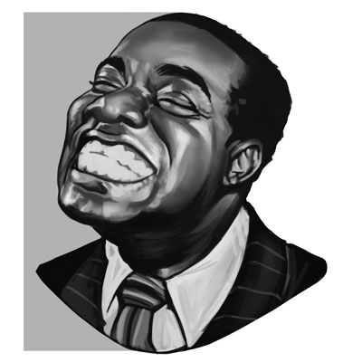
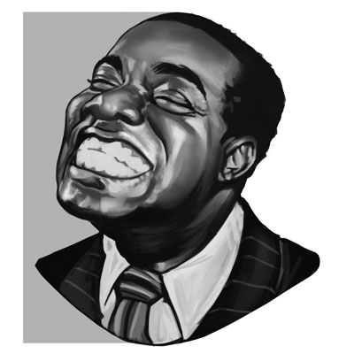

Francisco de Paula
Sou Francisco de Paula, moro no Rio de Janeiro, mais especificamente na Baixada e tenho 31 anos. Cursei Ciência da Computação, hoje faço Licenciatura em Matemática e sou Arte Amador, isso mostra que minha trajetória não é nada linear, por isso minha frase preferida é “Quando a gente anda sempre em frente, não pode ir muito longe…” (Saint-Exupéry).
Desde pequeno desenho e me interesso por arte, chegando a pensar em seguir no Desenho Industrial. Contudo, a escolha para o meu primeiro curso superior foi Ciência da Computação, sempre fui apaixonado por jogos e tecnologia, a escolha fez muito sentido no momento. Foi um ótimo curso, mas esse período passei por alguns pontos baixos que resultaram no trancamento da graduação. Posteriormente, iniciei a Licenciatura em Matemática, um novo curso, em uma nova faculdade, a combinação perfeita das áreas de humanas com a Educação e exatas com a Matemática.
Nunca deixei a programação e constantemente tento utilizar os conhecimentos na minha vida, acadêmica e cotidiana. Isso fez retornar o estudo e o desejo que encontrar novas oportunidades com os códigos. Esse site é um espaço para compartilhar minha trajetória de estudos e apresentar projetos, pessoais e profissionais. Outros detalhes e informações estão descritos no Currículo.


 
